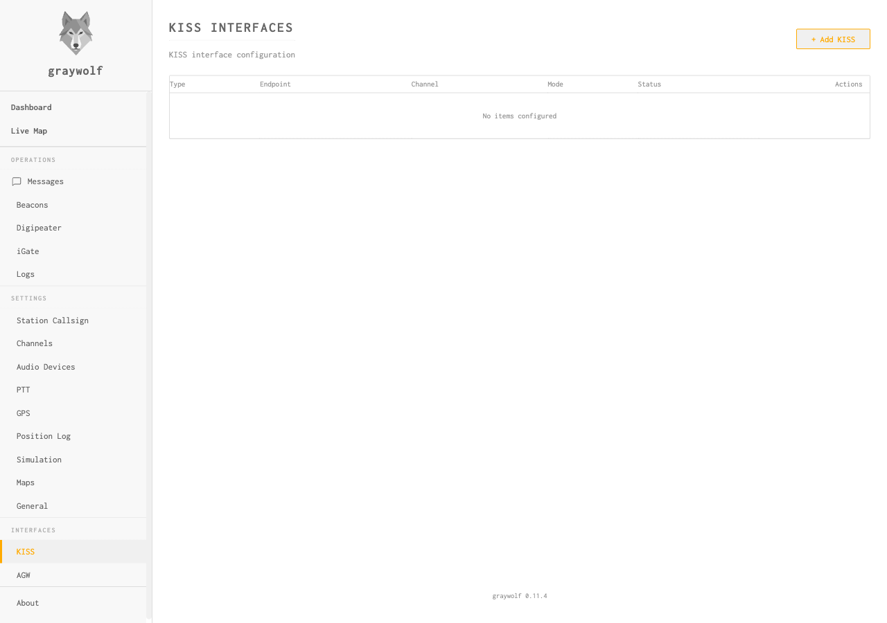

KISS TNC
Expose graywolf as a KISS terminal node controller
The KISS (Keep It Simple, Stupid) interface lets third-party packet software — such as Xastir, YAAC, pinpoint, or aprx — use graywolf as their TNC. Graywolf supports multiple simultaneous KISS interfaces over TCP, serial, or Bluetooth.

Interface Types
| Type | Description | Use Case |
|---|---|---|
tcp |
TCP socket server accepting multiple clients | Most APRS software (Xastir, YAAC, etc.) |
serial |
Virtual serial port | Legacy software expecting a serial TNC |
bluetooth |
Bluetooth serial profile | Mobile APRS apps (APRSdroid, etc.) |
Interface Settings
| Field | Default | Description |
|---|---|---|
name |
— | Display name for this interface |
type |
— | tcp, serial, or bluetooth |
listen_addr |
— | Listen address for TCP (e.g., 0.0.0.0:6700) |
device |
— | Device path for serial/Bluetooth |
baud_rate |
9600 |
Baud rate for serial interfaces |
channel |
1 |
Default radio channel for this interface |
broadcast |
true |
Fan out received packets to all connected clients |
enabled |
true |
Interface active/inactive |
TCP Setup
A TCP KISS interface is the most common setup. Configure it to listen
on a port and point your APRS software at host:port
with KISS protocol selected.
Port 6700 is the conventional KISS-over-TCP port used by most APRS software. If your APRS application asks for a “KISS TNC host”, point it at graywolf’s IP and this port.
Multi-Port KISS
The KISS protocol supports multiple “ports” (0–15) within a single connection. Each KISS port maps to a graywolf radio channel. Clients can send and receive on different channels through one TCP connection.
RX Broadcast
When broadcast is enabled, all packets received on the
interface’s channel are forwarded to every connected KISS client.
Disable this if you want a write-only interface where clients can
transmit but don’t receive.
API Reference
| Method | Endpoint | Description |
|---|---|---|
| GET | /api/kiss | List all KISS interfaces |
| GET | /api/kiss/{id} | Get a single interface |
| POST | /api/kiss | Create a new interface |
| PUT | /api/kiss/{id} | Update an interface |
| DELETE | /api/kiss/{id} | Delete an interface |